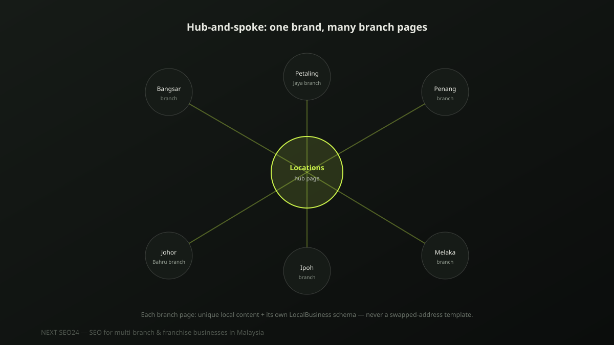

SEO for multi-branch and franchise businesses in Malaysia
One brand, ten branches, and only one of them shows up when someone searches nearby — that's the recurring pattern we see. Multi-location SEO fails for a specific, fixable reason almost every time: near-identical location pages that read as duplicate content to Google. Here's how to structure it properly.
The core challenge: one brand, many locations, one set of rankings to win
A single-location business competes for rankings once. A ten-branch business is effectively running ten separate local SEO campaigns at the same time, each competing against different local rivals in a different neighbourhood — while still needing every branch page to look and read as part of one coherent, trustworthy brand. Most of the failures we see come from treating this as one problem instead of ten related ones.
Duplicate content: the #1 mistake multi-branch sites make
The most common pattern: a template location page where only the branch name, address and phone number change, with every other sentence identical across all ten pages. Google reads this as duplicate content and typically indexes only one version — usually the branch page with the most existing authority — leaving the other nine branches invisible in local search no matter how good the business actually is at each location.
What a good location page actually needs
- Genuine local detail. Parking availability, nearby landmarks, accessibility notes, the actual staff at that branch — details a customer at that specific location would find useful and that a competitor can't simply copy.
- Branch-specific reviews. Embed or reference reviews for that specific location, not a generic aggregate review score pulled from the whole company.
- Real differences, stated honestly. If stock, services or hours genuinely differ by branch, say so plainly — this is exactly the kind of specific, non-generic detail Google's Helpful Content system rewards.
- Unique meta titles and descriptions. Each branch page needs its own, built around that branch's suburb or city — not a shared template with the location name inserted into an identical sentence.
Google Business Profile at scale
One profile per real, staffed physical location — never a single profile representing multiple branches, and never a profile created for an address with no staff actually present. Google's guidelines are explicit about this, and violations can risk suspension across the entire account, not just the one listing at fault. For the full method on ranking each profile well, see our Local SEO and Google Maps ranking guide.
Structured data for multi-location businesses
Each branch page should carry its own LocalBusiness schema with that branch's specific address, phone number and opening hours — not one shared block repeated across every page with only the visible text changed. Consistent, accurate structured data per location reinforces the same NAP (name, address, phone) consistency that matters for local ranking generally.
{
"@context": "https://schema.org",
"@type": "LocalBusiness",
"name": "Brand Name — Bangsar Branch",
"address": {
"@type": "PostalAddress",
"streetAddress": "12 Jalan Telawi",
"addressLocality": "Kuala Lumpur",
"postalCode": "59100",
"addressCountry": "MY"
},
"telephone": "+60-3-XXXX-XXXX",
"openingHours": "Mo-Sa 10:00-19:00"
}A hub-and-spoke internal linking model
Build one central "Locations" or "Branches" page linking out to every individual branch page, and have each branch page link back to the hub plus its one or two geographically nearest branches. This distributes internal authority across all locations instead of concentrating it only on the homepage, and gives Google a clear, crawlable map of the full branch network — rather than leaving it to infer the structure from a footer link list alone.
Frequently asked questions
How do I stop my branch location pages from looking like duplicate content to Google?
Give each location page genuinely unique content, not just a swapped address: real staff or branch details, location-specific reviews, parking or accessibility notes, and any services or stock that differ by branch. A shared template with only the name, address and phone number changed is the single most common cause of multi-location sites failing to rank individually.
Should every branch have its own Google Business Profile?
Yes, one profile per physical location with a real, staffed address — never one profile trying to represent multiple branches, and never a profile for a location that doesn't actually have staff present. Google's guidelines are explicit on this, and profiles that violate it risk suspension across the whole account, not just the offending listing.
What's the right internal linking structure for a multi-location website?
A hub-and-spoke model: one central locations page linking out to every individual branch page, and each branch page linking back to the hub and to its one or two geographically nearest branches. This distributes authority across all locations instead of concentrating it only on the homepage, and helps Google understand the full location structure.
Running a multi-branch business that isn't ranking at every location?
Send us your branch list — we'll show you exactly which locations are invisible in search and why.
Chat on WhatsApp →